Nada genérico. Nada automatizado.
Eventos com identidade, emoção e presença.
A O que a IA não faz nasce para resgatar o lado humano dos eventos. Criamos experiências com alma, intenção e presença real.
Cada projeto é único — pensado do conceito à execução. Nada reaproveitado. Nada genérico.
Tecnologia apoia.
Mas não substitui o vivido.
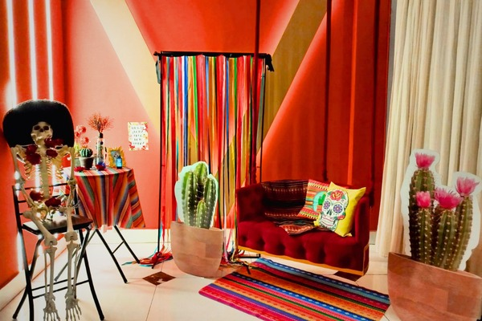
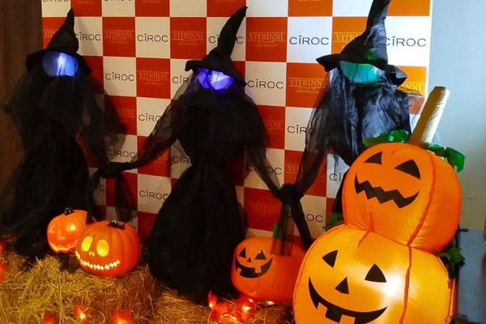
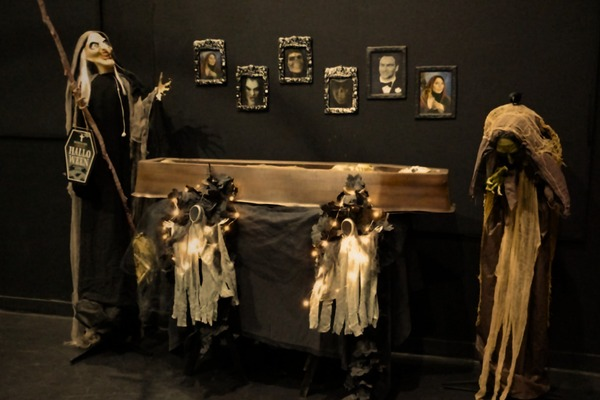
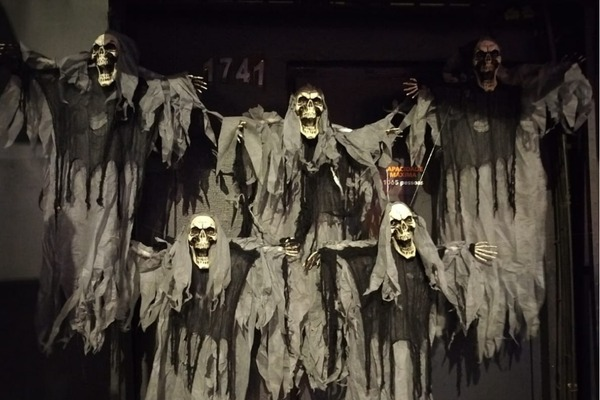
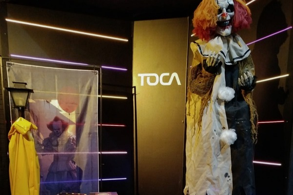
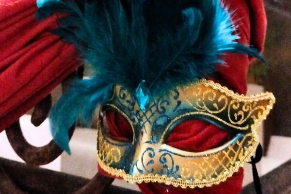
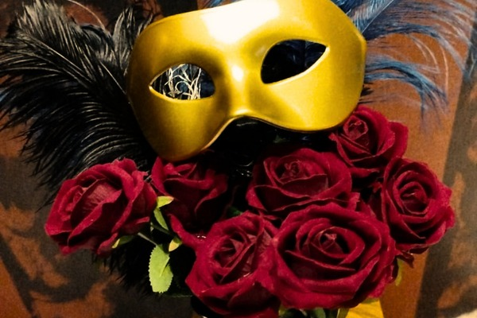
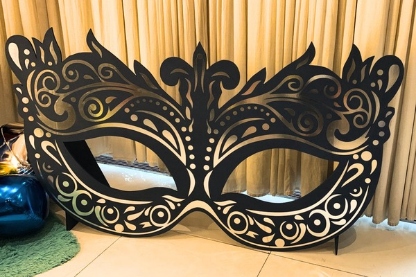
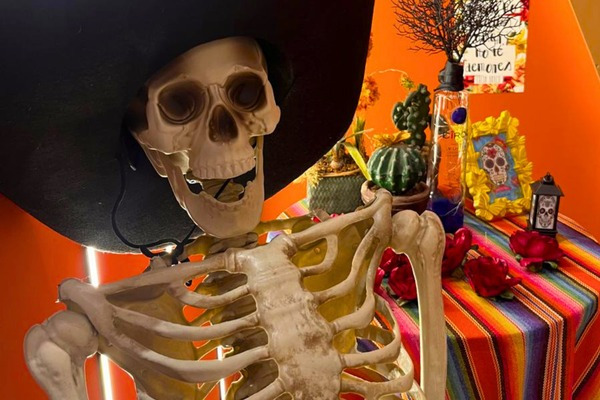
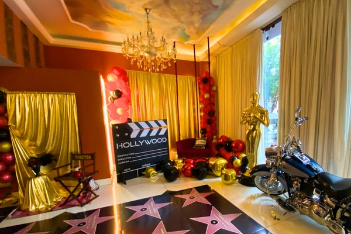
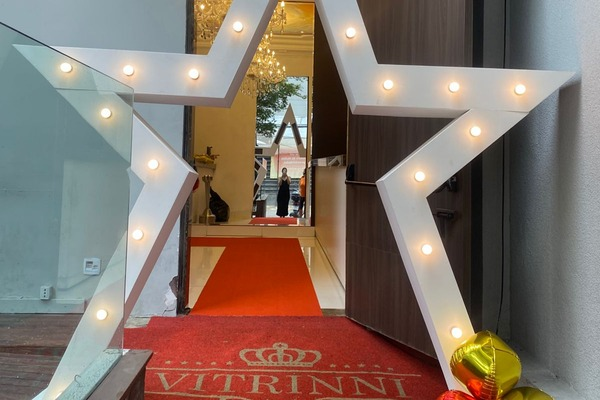
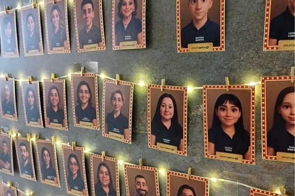
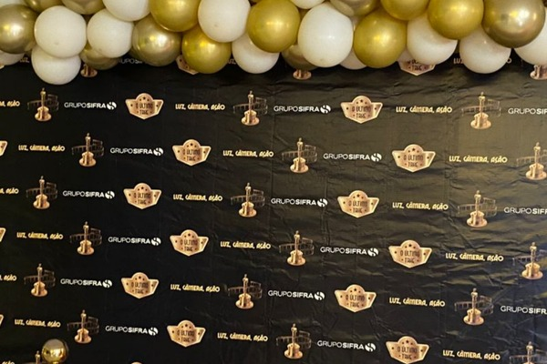
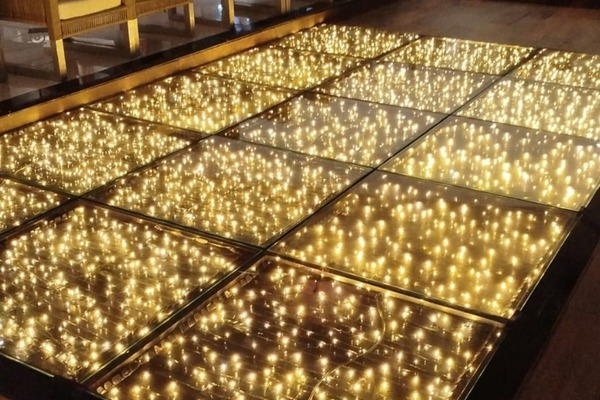
Baile de Máscaras O baile de máscaras é uma celebração marcada por mistério, elegância e sofisticação. Com origem na tradição festiva de Veneza, esse estilo de evento tornou-se popular em diversas ocasiões especiais, como festas de debutantes, casamentos, formaturas e comemorações de Carnaval e Réveillon. Trajes elegantes combinados com máscaras venezianas que cobrem parte ou todo o rosto criam uma atmosfera encantadora, trazendo charme, glamour e um toque de fantasia para uma festa inesquecível.
O Halloween é uma celebração marcada por mistério, diversão e um toque de susto, com origem em antigas tradições populares da Irlanda. A festa das bruxas é conhecida pelos elementos clássicos do universo do terror, como monstros, fantasmas, vampiros e criaturas fantásticas que estimulam a imaginação. Muito popular em aniversários, eventos escolares e festas temáticas, a decoração costuma incluir abóboras iluminadas, teias de aranha, caldeirões, luzes escuras e personagens assustadores. Fantasias criativas e divertidas completam o clima, transformando a festa em uma experiência lúdica e envolvente.
Festa dos Mortos Inspirada na tradicional celebração cultural do México, a festa dos mortos traz uma abordagem colorida e artística para o Halloween, valorizando a memória, a alegria e os símbolos decorativos ligados às caveiras estilizadas. Esse estilo de festa combina cores vibrantes, flores, velas decorativas e elementos típicos das caveiras mexicanas, criando uma atmosfera marcante e cheia de personalidade. Muito utilizada em eventos temáticos e comemorações modernas, essa proposta mistura tradição e estética vibrante, resultando em uma celebração alegre, cultural e visualmente encantadora.
A festa com o tema Oscar é uma celebração inspirada no glamour e no brilho das grandes premiações do cinema internacional. Baseada na tradicional cerimônia organizada pela Academy of Motion Picture Arts and Sciences, esse tipo de evento valoriza o tapete vermelho, o luxo e a atmosfera sofisticada de Hollywood. Muito utilizada em aniversários, formaturas, eventos corporativos e festas comemorativas, a decoração costuma incluir elementos como estatuetas douradas, painéis cinematográficos, iluminação cênica e espaços para fotos. Trajes elegantes, vestidos de gala e ternos sofisticados completam o clima de premiação, transformando a festa em uma experiência glamourosa e inesquecível, digna das estrelas do cinema.
Mais do que fundadoras — uma parceria construída na confiança, na energia e na criação conjunta.
Débora é sócia de uma empresa de TI há mais de 20 anos. Formada em Fotografia e Literatura, é designer, criativa e multifacetada: transita entre sites, identidades visuais e ideias que parecem brotar de todos os lados. Eclética e temática no jeito de ser, de se vestir e de decorar a casa, é apaixonada por plantas e por tudo que tem alma. Roqueira, flamenguista e dona de um olhar sensível — aquele que sente antes de criar.
Paula atua na área de eventos corporativos e gerencia baladas em São Paulo, além de treinar equipes e oferecer consultoria para bares e restaurantes. Com mais de 10 anos de experiência, é prática, inovadora e justa — um verdadeiro furacão aquariano. Faixa preta de jiu-jitsu, é nossa força e segurança (mas é melhor não provocar!). Ama plantas, bichinhos e o que é autêntico.
Roberta é especialista na área financeira, tem talento natural para organização, números e equilíbrio — sem ela, o time criativo se perderia nas planilhas e sonhos. É quem cuida, acolhe e coloca os pés no chão quando o coração voa demais. Intuitiva, empática e protetora — típica canceriana — é o equilíbrio entre razão e afeto que mantém tudo funcionando. Também roqueira, as três tem a familia musical em comum. Filhas de musicos e compositores a arte está em tudo a sua volta.
Juntas, somos o que a IA não faz: emoção, intuição e parceria. Cada cenário que criamos nasce desse laço e desse sentir — o ingrediente que nenhuma máquina é capaz de reproduzir.
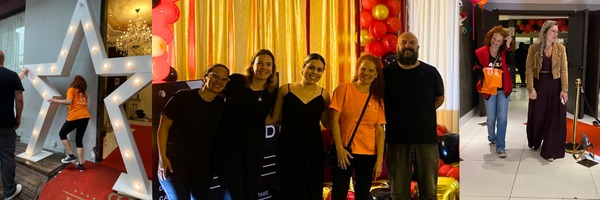
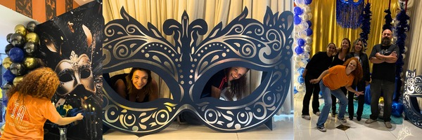
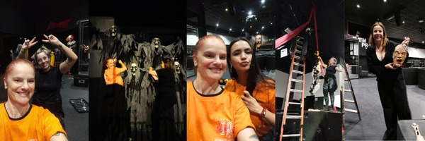
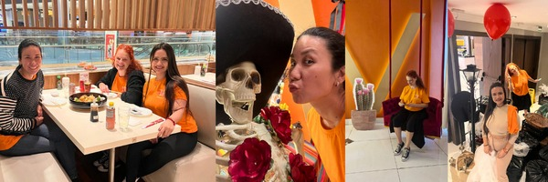
Vamos, tire a sua ideia do papel, e entre em contato com a gente.